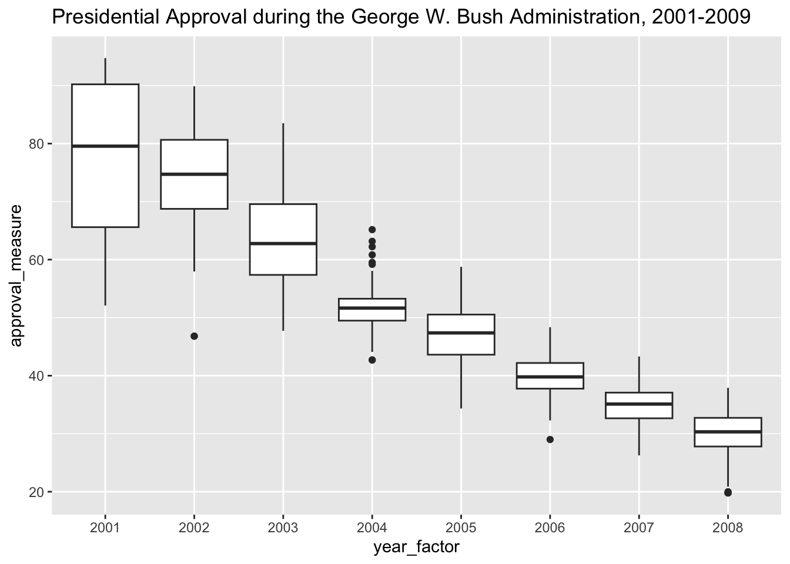
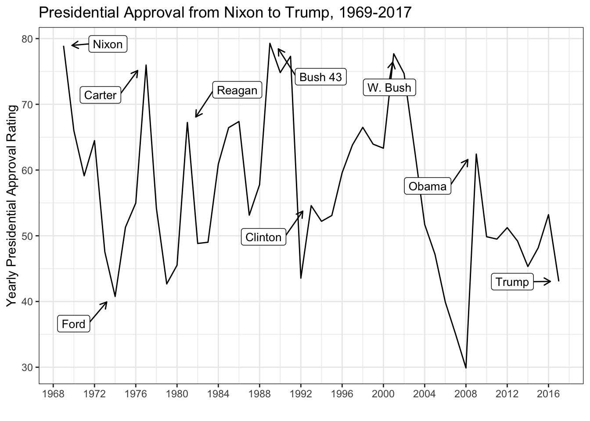
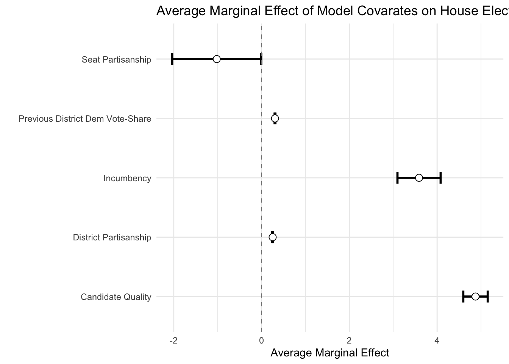
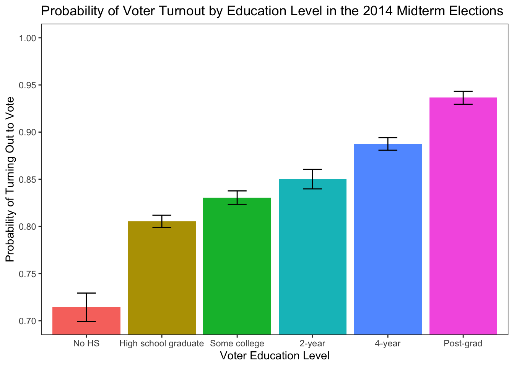
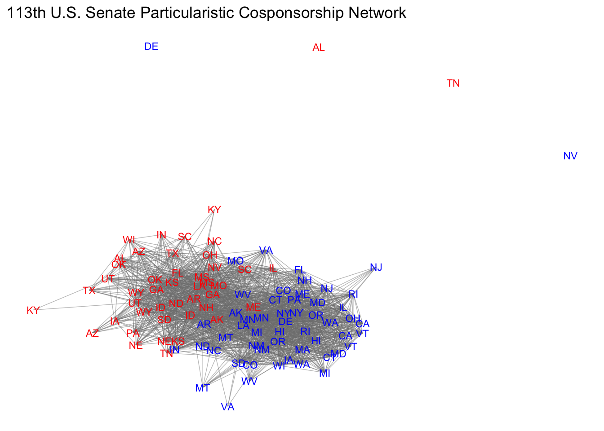
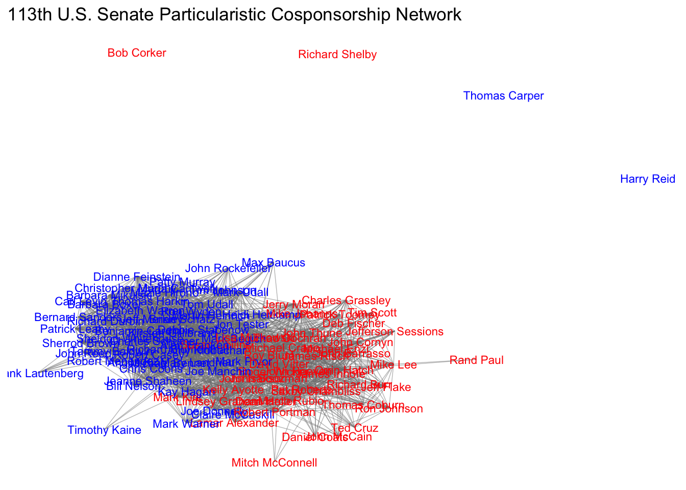
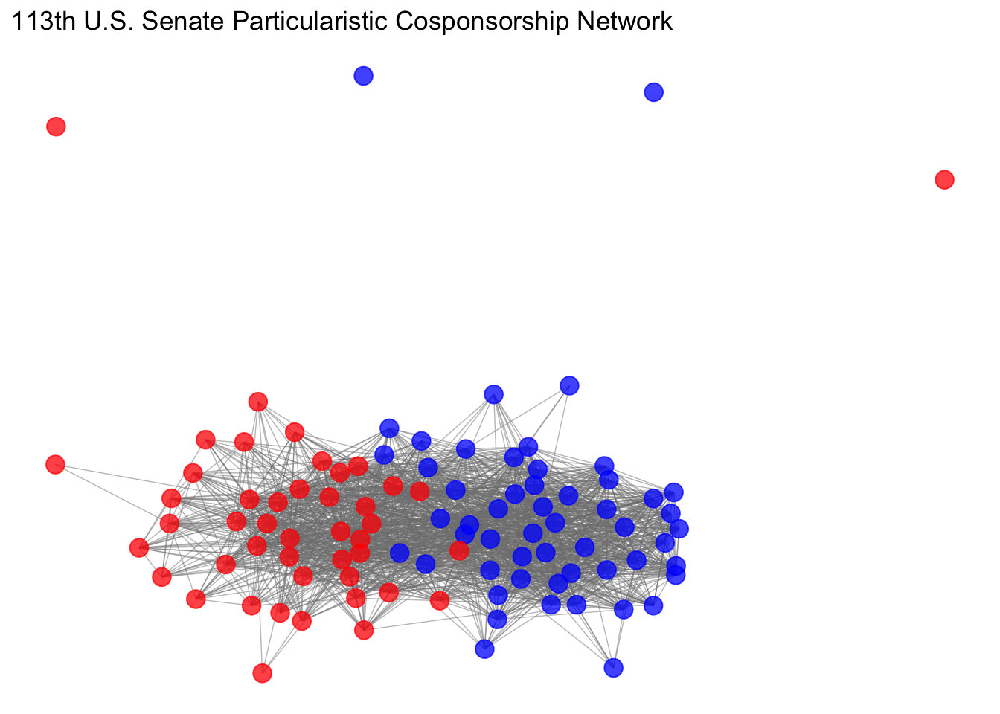

Programming & Methods Resources Workshop
Introduction to The Grammar of Graphics (ggplot) & Data Visualization
Carlos Algara, Cory Struthers (Belden), & Jaime Jackson
5/25/2018
To replicate the following tutorial, you can find the replication code & data here: R script & Tutorial Data in R Environment form.
General Overview of ggplot Tutorial
The basic logic (& relative advantages) behind the ggplot coding interface can be summarized in the following key points:
Consistent langugage underlies the code, commonly referred to as the ``grammar of graphics’’ (Wilkinson 2005)
Very flexible programming which can, with few changes, be used to create multiple types of data visualization. For example, it takes one simple section of code to change a bar chart to a line graph.
Many themes are available to polish and cutomize your high resolution plots.
Most importantly, for our purposes, ggplot code is fully intergrated in the R computing environment. What this means is that we can derive multiple quantities of interest (descriptive statistics, model output, post-estimated model quantities of interest, etc.) using various packages and plot them using ggplot
HUGE, I’m talking HUGE, user community dedicated to providing crowd sourced code for whatever cutomization you seek in the ggplot environment.
In this tutorial, I will provide an applied tutorial to understanding the logic of the ggplot language while completing the following tasks:
Plotting descriptive distributions of key variables (histograms, density plots, bar charts, dot plots)
Plotting simple bivariate relationships of interest with appropriate measures of uncertainty around estimates (scatterplots, difference of means bar charts, boxplots)
Plotting model quantities of interests that provide for a graphical interpretation of our empirical work rather than tables. We will make coefficient plots articulating model output, plots articulating interactive relationships of interest, and post-estimation plots of interest (predicted probabilities from a logistic regerssion, marginal effects plots).
Basic preview to graphic add-ons to ggplot which provides for spatial mapping and plotting of social networks.
Plotting Descriptives
For this example, let’s tackle a problem plaguing the nature of ideological representation and congruence between the mass public and their elected elites (see Achen’s (1978) critique of the infamous Miller & Stokes (1963) study as a primer on the methodological problem). Let’s start by loading, exploring the data, and walking through some examples of plotting describtive data.
library(ggplot2) # Load ggplot2
library(plyr) # Loaad plyr, which provides tools for summarizing data
library(readstata13) # Load readstata13 to read Stata Files
library(dplyr) # Loaad dplyr, which provides tools that I always use, like as_tibble
library(reshape) # Load reshape, which provides for the melt function needed for data manipulation.
load("/Users/caalgara/Desktop/carlos_school/PhD_UC Davis/Dissertation Project/Ch2_Electoral_Implications_Approval/Aldrich_McKelvey_Scaling/Aldrich_McKelvey_Scaling_2008_2016_Positions_Results.Rdata") # Load R environment containing various estimations of candidate & citizen ideological ideal points from 2008-2016.
# Let's explore the nature of ideological preferences in the American electorate over time!
print(as_tibble(rescaled_overtime_idealpts_2008_2016))## # A tibble: 262,896 x 10
## year case_id year_district_id intercept aldmck_weight_p… idealpt selfplace
## <chr> <chr> <chr> <dbl> <dbl> <dbl> <dbl>
## 1 2008 112 2008 NY14 -0.653 0.218 0.218 4
## 2 2008 11212 2008 CA23 -2.18 0.435 -1.31 2
## 3 2008 11488 2008 WA8 -0.943 0.354 1.18 6
## 4 2008 11710 2008 MA2 -0.843 0.281 0.562 5
## 5 2008 11902 2008 IL10 -3.05 0.653 -0.435 4
## 6 2008 12118 2008 MI15 -1.41 0.326 -1.09 1
## 7 2008 12517 2008 CA43 -0.957 0.261 -0.696 1
## 8 2008 127 2008 NY22 -1.32 0.331 -0.994 1
## 9 2008 1300 2008 CA7 -1.09 0.326 -0.435 2
## 10 2008 13717 2008 NC4 -1.09 0.653 2.83 6
## # … with 262,886 more rows, and 3 more variables: polinfo <dbl>,
## # idealpts_linear_map_overtime <dbl>, pid7 <chr># Huge data frame of scaled Aldrich-McKelvey ideal points for each CCES respondent from 2008-2016. For more information on the method deriving these scaled ideal points, see Ramey (2016).
# Of course, countless studies suggest that the distribution of ideological preferences of the mass public is unimodal. Let's make a density plot to see if this is the case.
ggplot(data=rescaled_overtime_idealpts_2008_2016,aes(x=idealpt))# Not so fast my dude. We have to learn to crawl before we run, what happened?
# Now that we have some knowledge and have to specify our density plot aestic, let's get to work & make our plot!
ggplot(data=rescaled_overtime_idealpts_2008_2016,aes(x=idealpt)) + geom_density()# Success! But there might be evidence that the distribution of ideological preferences might be trimodal. That is, clear partisan cleavages with respect to ideological preferences. Let's explore this possibility by first coding partisan preferences
rescaled_overtime_idealpts_2008_2016$pid3 <- ifelse(rescaled_overtime_idealpts_2008_2016$pid7 %in% c("Lean Republican","Not very strong Republican","Strong Republican"),"Republican",ifelse(rescaled_overtime_idealpts_2008_2016$pid7 %in% c("Lean Democrat","Not very strong Democrat","Strong Democrat"),"Democrat",ifelse(rescaled_overtime_idealpts_2008_2016$pid7 %in% c("Independent"),"Independent",NA)))
print(as_tibble(rescaled_overtime_idealpts_2008_2016)) # Let's check it out## # A tibble: 262,896 x 11
## year case_id year_district_id intercept aldmck_weight_p… idealpt selfplace
## <chr> <chr> <chr> <dbl> <dbl> <dbl> <dbl>
## 1 2008 112 2008 NY14 -0.653 0.218 0.218 4
## 2 2008 11212 2008 CA23 -2.18 0.435 -1.31 2
## 3 2008 11488 2008 WA8 -0.943 0.354 1.18 6
## 4 2008 11710 2008 MA2 -0.843 0.281 0.562 5
## 5 2008 11902 2008 IL10 -3.05 0.653 -0.435 4
## 6 2008 12118 2008 MI15 -1.41 0.326 -1.09 1
## 7 2008 12517 2008 CA43 -0.957 0.261 -0.696 1
## 8 2008 127 2008 NY22 -1.32 0.331 -0.994 1
## 9 2008 1300 2008 CA7 -1.09 0.326 -0.435 2
## 10 2008 13717 2008 NC4 -1.09 0.653 2.83 6
## # … with 262,886 more rows, and 4 more variables: polinfo <dbl>,
## # idealpts_linear_map_overtime <dbl>, pid7 <chr>, pid3 <chr>ggplot(data=rescaled_overtime_idealpts_2008_2016,aes(x=idealpt,color=pid3)) + geom_density()
# Urgh, good start but pretty ugly and nowhere close to publication quality. Let's make this prettier by factoring out our pid3 and getting rid of "NA".
rescaled_overtime_idealpts_2008_2016$pid3 <- factor(rescaled_overtime_idealpts_2008_2016$pid3,levels=c("Democrat","Independent","Republican"))
print(str(rescaled_overtime_idealpts_2008_2016$pid3))## Factor w/ 3 levels "Democrat","Independent",..: 2 1 3 2 1 1 1 1 1 3 ...
## NULL# Let's make a really pretty plot showing partisan differences.
ggplot(subset(rescaled_overtime_idealpts_2008_2016,rescaled_overtime_idealpts_2008_2016$pid3 != "Independent"),aes(x=idealpt,fill = pid3))+ geom_density(alpha=.2) + theme_bw() + scale_fill_manual("",values =c("blue","red")) + scale_x_continuous("Aldrich-McKelvey Ideological Placement (Liberal-Conservative)",breaks=c(-4,0,4),limits=c(-4,4),labels=c("-4","0","4")) + scale_y_continuous("Density",expand=c(0,0)) + theme(legend.position=c(0.10, 0.90), legend.box.just = "left", legend.key.size = unit(1,"line"), legend.key = element_rect(size = 0, color = 'white'), legend.text.align = 0, legend.box = "horizontal") + theme(panel.grid.major = element_blank(), panel.grid.minor = element_blank())
# This is cool, let's do House candidates! First, let's check the data frame.
print(as_tibble(aldmck_congress))## # A tibble: 1,900 x 6
## district placement.dem_p… placement.rep_p… placement.dem_h… placement.rep_h…
## <chr> <dbl> <dbl> <dbl> <dbl>
## 1 AK1 -0.390 0.816 -0.287 0.832
## 2 AL5 -0.390 0.816 -0.115 1.01
## 3 AL3 -0.390 0.816 -0.234 0.724
## 4 AL2 -0.390 0.816 0.0107 0.912
## 5 AL4 -0.390 0.816 0.0506 0.790
## 6 AZ1 -0.390 0.816 -0.00825 0.629
## 7 AZ2 -0.390 0.816 0.0454 0.727
## 8 AZ3 -0.390 0.816 -0.246 0.827
## 9 AZ4 -0.390 0.816 -0.132 0.461
## 10 AZ5 -0.390 0.816 -0.209 0.762
## # … with 1,890 more rows, and 1 more variable: year <dbl># Oh no, we have to manipulate the dataframe. Urgh, bummer, but easy!
house_candidates <- subset(aldmck_congress,select=c("year","district","placement.dem_hse_libcon_placement","placement.rep_hse_libcon_placement")) # Extract the variables you want
house_candidates <- melt(house_candidates,id=c("year","district")) # Melt the dataframe from wide to long!
print(table(house_candidates$variable)) # We have one variable with a string variable indicating candidate type.##
## placement.dem_hse_libcon_placement placement.rep_hse_libcon_placement
## 1900 1900house_candidates$variable <- ifelse(house_candidates$variable == "placement.dem_hse_libcon_placement","Democrat",ifelse(house_candidates$variable == "placement.rep_hse_libcon_placement","Republican",NA))
ggplot(house_candidates, aes(x = value, fill = variable,linetype=variable)) + geom_density(alpha=.2) + theme_minimal() + scale_fill_manual("",values =c("blue","red")) + scale_x_continuous("Candidate Aldrich-McKelvey Ideological Placement (Liberal-Conservative)",limits=c(-1,1),breaks=c(-1,0,1),labels=c("-1","0","1")) + scale_y_continuous("Density",expand=c(0,0)) + theme(legend.position="bottom", legend.box.just = "left", legend.key.size = unit(1,"line"), legend.key = element_rect(size = 0, color = 'white'), legend.text.align = 0, legend.box = "horizontal") + scale_linetype_manual("",values=c("solid","dashed")) + facet_wrap(~year)
# What did we just do?
# We can also assess the validity of our ideal points by looking at the box plot distributions
ggplot(rescaled_overtime_idealpts_2008_2016, aes(x=selfplace, y=idealpts_linear_map_overtime, group=selfplace)) + geom_boxplot(colour = "black",outlier.shape = NA) + scale_y_continuous("Liberal-Conservative Aldrich-McKelvey Ideal Point Estimates",limits=c(-2.5,2.5),breaks=seq(-2,2,1)) + scale_x_continuous("Liberal-Conservative Raw Ideological Self-Placement",breaks=seq(1,7,1)) + scale_fill_discrete(guide=F) + stat_summary(fun.y = mean, geom="point",colour="black", size=2.00, shape= 17) + scale_shape_discrete("") + theme_minimal()
We can also plot descriptives, such as line graphs articulating trends in time. Let’s load some data presidential approval from the great people at the Roper Center and also make a histogram for initial evaluation of our approval data.
approval <- read.csv("/Users/caalgara/Desktop/carlos_school/PhD_UC Davis/Research/Data/American Politics/Presidential_Approval/presidents_survey_marginals_1969_2017.csv")
as_tibble(approval)## # A tibble: 4,075 x 12
## X Organization Polling.Start Polling.End Approve Disapprove No.Opinion
## <int> <chr> <chr> <chr> <int> <int> <chr>
## 1 1 Quinnipiac … 2017-01-20 2017-01-25 36 44 19
## 2 2 TIPP / IBD 2017-01-27 2017-02-02 42 48 9
## 3 3 CNN 2017-01-31 2017-02-02 44 53 3
## 4 4 CBS News 2017-02-01 2017-02-02 40 48 12
## 5 5 Quinnipiac … 2017-02-02 2017-02-06 42 51 7
## 6 6 Pew 2017-02-07 2017-02-12 39 56 6
## 7 7 Fox 2017-02-11 2017-02-13 48 47 6
## 8 8 Kaiser Fami… 2017-02-13 2017-02-19 41 52 7
## 9 9 McClatchy /… 2017-02-15 2017-02-19 41 49 9
## 10 10 Quinnipiac … 2017-02-16 2017-02-21 38 55 7
## # … with 4,065 more rows, and 5 more variables: Sample.Size <int>,
## # president <chr>, year <int>, approval_measure <dbl>, series <chr>ggplot(approval, aes(x = approval_measure)) + geom_histogram(alpha=.2,fill="black",color="black") + theme_minimal() + scale_x_continuous("Presidential Approval Polling") + ggtitle("Distribution of Presidential Approval Polling Data, 1969-2017") Let’s make a simple figure of presidential approval over time. Note, since we have data that is daily given the polling end date, we have to convert the date variable to something \(\texttt{ggplot}\) can use.
approval$Polling.End <- as.Date(approval$Polling.End)
ggplot(approval,aes(x=Polling.End,y=approval_measure)) + geom_line()This is a really noisy plot, given the number of polls we have (\(N\) = 4,075). Perhaps we are interested in a single president. \(\texttt{ggplot}\) provides for flexibility in subsetting data for our purposes. Consider the following simple line graph looking at the history of presidential approval during the presidency of George W. Bush.
ggplot(subset(approval,approval$president == "Bush"),aes(x=Polling.End,y=approval_measure)) + geom_line() + ggtitle("Presidential Approval during the George W. Bush Administration, 2001-2009")Still a little noisy. What we could do is plot this using a series of boxplots by year to see how well George Bush’s approval rating held up over the years.
approval$year_factor <- factor(approval$year,levels=seq(1969,2017,1))
ggplot(subset(approval,approval$president == "Bush"),aes(x=year_factor,y=approval_measure)) + geom_boxplot() + ggtitle("Presidential Approval during the George W. Bush Administration, 2001-2009")
Why don’t we take the mean for each year and fix our line graph? Let’s add labels too to make the plot pretty and distinguish between Presidents.
mean_approval <- ddply(approval, .(year), summarize, approval_mean =mean(approval_measure, na.rm = T))
mean_approval$president <- ifelse(mean_approval$year %in% 1969, "Nixon",ifelse(mean_approval$year %in% 1974, "Ford",ifelse(mean_approval$year %in% 1977, "Carter",ifelse(mean_approval$year %in% 1981, "Reagan",ifelse(mean_approval$year %in% 1989, "Bush 43",ifelse(mean_approval$year %in% 1993, "Clinton",ifelse(mean_approval$year %in% 2001, "W. Bush",ifelse(mean_approval$year %in% 2009, "Obama",ifelse(mean_approval$year %in% 2017, "Trump",NA)))))))))
library(ggrepel) # Package the allows us to use label repels
ggplot(mean_approval,aes(x=year,y=approval_mean,label=president)) + geom_line() + theme_bw() + geom_label_repel(arrow = arrow(length = unit(0.02, 'npc')),segment.size = 0.5, box.padding = 0.5,point.padding = 1, size = 3.5) + ggtitle("Presidential Approval from Nixon to Trump, 1969-2017") + scale_x_continuous("",breaks=seq(1968,2016,4)) + scale_y_continuous("Yearly Presidential Approval Rating")
Plotting Bivariate Relationships
While we implicitly plotted a bivariate relationship using the box-plot in the previous example, we can provide more explicit examples for studying bivariate relationships. Let’s use data on the 2016 U.S. House elections to look at the relationship between presidential voteshare and House election voteshare. Also, let’s fit a simple bivariate regression line to see in which districts Democratic candidates underperformed Clinton and which candidates over-performed Clinton. This will be articulated in the residual distance between the individual points and the point-estimate articulated in the regression line. In other words, the distance between the observed value \(Y\) (in this case, the vote share won by the Democratic House candidate) and \(\hat{Y}\) (in this case, the predicted vote share won by the Democratic House candidate articulated in the regression line).
as_tibble(house)## # A tibble: 25,367 x 15
## year stcd state cd inc pwin dv dvp fr po1 po2 redist
## <int> <int> <chr> <chr> <chr> <chr> <dbl> <dbl> <chr> <chr> <chr> <chr>
## 1 1900 101 AL 1 Demo… Demo… 82.7 NA "" Amat… Noth… ""
## 2 1900 102 AL 2 Demo… Demo… 98.3 83.3 "" Only… Noth… ""
## 3 1900 103 AL 3 Demo… Demo… 80.2 96.9 "" Amat… Noth… ""
## 4 1900 104 AL 4 Demo… Demo… 97.4 54.9 "" Only… Noth… ""
## 5 1900 105 AL 5 Demo… Demo… 67.0 77.9 "" Amat… Noth… ""
## 6 1900 106 AL 6 Demo… Demo… 65.7 69.8 "" Amat… Noth… ""
## 7 1900 107 AL 7 GOP … Demo… 51.8 44.6 "" Qual… Noth… ""
## 8 1900 108 AL 8 Demo… Demo… 59.7 84.8 "" Amat… Noth… ""
## 9 1900 109 AL 9 Demo… Demo… 100 83.0 "" No c… Noth… ""
## 10 1900 401 AR 1 Demo… Demo… 72.4 84.6 "" Amat… Noth… ""
## # … with 25,357 more rows, and 3 more variables: dexp <dbl>, rexp <dbl>,
## # dpres <dbl>ggplot(subset(house,house$year %in% 2016),aes(x=dpres,y=dv)) + geom_point(shape=1) + geom_smooth(method='lm',SE=T,color="black") + theme_bw() + scale_x_continuous("District Two-Party Vote Share Won by the Democratic Presidential Candidate") + scale_y_continuous("District Two-Party Vote Share Won \nby the Democratic House Candidate") + ggtitle("Scatterplot of Democratic House Vote-Share by \nDemocratic Presidential Vote-Share in 2016")Sometimes you want to add labels to the point scatters, so you can gain more information about outliers. Thus, let’s recreate the scatter plot with district labels and colors for partisan control before the election.
house$dem_seat <- ifelse(house$inc == "Dem Incum v. Dem Challenger",1,ifelse(house$inc == "Democratic Incumbent",1,ifelse(house$inc == "Democratic Open Seat",1,ifelse(house$inc == "Two Democrats, open seat",1,0))))
house$dem_seat <- factor(house$dem_seat,levels=c(0,1),labels=c("GOP Seat","Democratic Seat"))
house$district <- paste(house$state,house$cd,sep="")
ggplot(subset(house,house$year %in% 2016),aes(x=dpres,y=dv,color=dem_seat,label=district)) + geom_text(size=2) + geom_smooth(method='lm',SE=T,color="black") + theme_bw() + scale_color_manual("Seat Partisanship",values=c("red","blue")) + scale_x_continuous("District Two-Party Vote Share Won by the Democratic Presidential Candidate",breaks=seq(0,100,10)) + scale_y_continuous("District Two-Party Vote Share Won \nby the Democratic House Candidate",breaks=seq(0,100,10)) + ggtitle("Scatterplot of Democratic House Vote-Share by \nDemocratic Presidential Vote-Share") + geom_hline(yintercept = 50, colour = gray(1/2), lty = 2) + theme(legend.position="bottom")What if I was interested in looking at multiple election cycles of interest? Looks look at the pivotal elections of 1974, 1994, 2006, and 2010. Let’s take a look!
ggplot(subset(house,house$year %in% c(1974, 1994,2006,2010)),aes(x=dpres,y=dv,color=dem_seat,label=district)) + geom_point(shape=1) + geom_smooth(method='lm',SE=T,color="black") + theme_minimal() + scale_color_manual("Seat Partisanship",values=c("red","blue")) + scale_x_continuous("District Two-Party Vote Share Won by the Democratic Presidential Candidate",breaks=seq(0,100,10)) + scale_y_continuous("District Two-Party Vote Share Won \nby the Democratic House Candidate",breaks=seq(0,100,25)) + ggtitle("Scatterplot of Democratic House Vote-Share by \nDemocratic Presidential Vote-Share") + geom_hline(yintercept = 50, colour = gray(1/2), lty = 2) + theme(legend.position="bottom") + facet_wrap(~year,ncol=2) + theme(panel.grid.major = element_blank(), panel.grid.minor = element_blank(), panel.background = element_blank()) # The last part of the code takes out all gridlines.In the next section, we will explore how to articulate the results of a simple analysis of variance. For this, we will evaluate the nature of differential item functioning (DIF) in citizen perceptions of political candidates and parties. The problem of DIF can be illustrated in the following example in which the ideological placement of the Democratic party might vary by the ideological perception of a survey respondent. For example, a conserative respondent may place the Democrats on the far-left of the scale (at a 1 on the standard liberal-conservative 7 point scale) while a liberal respondent may place the Democrats more towards the center of the scale (at a 3 or so on the standard liberal-conservative scale). While methods, such as Aldrich-McKelvey scaling, corrects for this measurement error and estimates ``true’’ ideological positions of political stimului (see Hare et al. 2016 for further details on this estimation), it is important to empirically atriculate the problem.
For this, we turn to the 2016 Cooperative Congressional Election Study to see if DIF manifests itself in the mass public.
cces <- read.dta13("/Users/caalgara/Dropbox/CCES2016_UCD_original/common/CCES2016.dta",convert.factors = F)
cces <- subset(cces,select=c("CC16_340a","CC16_340d","CC16_340e"))
colnames(cces) <- c("self_placement","hrc_placement","dt_placement")
as_tibble(cces)## # A tibble: 64,600 x 3
## self_placement hrc_placement dt_placement
## <int> <int> <int>
## 1 3 1 7
## 2 4 1 5
## 3 7 7 1
## 4 5 7 4
## 5 3 2 6
## 6 8 8 8
## 7 7 2 6
## 8 4 4 1
## 9 6 1 5
## 10 5 1 6
## # … with 64,590 more rowscces[cces == 8] <- NA # Recode 8, the missing code, to missing
cces <- na.omit(cces)
sample_means <- ddply(cces, .(self_placement), summarize, hrc_sd = sd(hrc_placement,na.rm=T), dt_sd = sd(dt_placement,na.rm=T),hrc_placement = mean(hrc_placement, na.rm = T), dt_placement = mean(dt_placement, na.rm = T))
z_critical_value <- qnorm(0.975)
x <- data.frame(table(cces$self_placement)) # Retrieve Ns
sample_means$self_placement_n <- x[,2]
sample_means$margin_of_error_hrc <- z_critical_value * (sample_means$hrc_sd / sqrt(sample_means$self_placement_n)) # Get margin of error for HRC
sample_means$margin_of_error_dt <- z_critical_value * (sample_means$dt_sd / sqrt(sample_means$self_placement_n)) # Get margin of error for DT
sample_means$hrc_lower_ci <- sample_means$hrc_placement - sample_means$margin_of_error_hrc
sample_means$hrc_upper_ci <- sample_means$hrc_placement + sample_means$margin_of_error_hrc
sample_means$dt_lower_ci <- sample_means$dt_placement - sample_means$margin_of_error_dt
sample_means$dt_upper_ci <- sample_means$dt_placement + sample_means$margin_of_error_dt
# Let's rework our dataframe to get Trump and Clinton on the same plot
colnames(sample_means)## [1] "self_placement" "hrc_sd" "dt_sd"
## [4] "hrc_placement" "dt_placement" "self_placement_n"
## [7] "margin_of_error_hrc" "margin_of_error_dt" "hrc_lower_ci"
## [10] "hrc_upper_ci" "dt_lower_ci" "dt_upper_ci"hrc <- sample_means[,c(1,4,9,10)]
dt <- sample_means[,c(1,5,11,12)]
colnames(hrc) <- c("self_placement","mean","lower","upper")
colnames(dt) <- c("self_placement","mean","lower","upper")
hrc$candidate <- "Hillary Clinton"
dt$candidate <- "Donald Trump"
sample_means <- rbind(hrc,dt)
ggplot(sample_means,aes(x=self_placement,y=mean,ymin=lower,ymax=upper,color=candidate)) + geom_pointrange() + scale_color_manual("2016 Presidential Candidate",values=c("red","blue")) + theme_minimal() + scale_x_continuous("Respondent Liberal-Conservative Self-Placement",breaks=seq(1,7,1)) + scale_y_continuous("Mean Ideological Placement of Hillary Clinton") + ggtitle("Evaluating Differential Item Function in Citizen Ideological Placement \nof the 2016 Presidential Candidates") + theme(legend.position="bottom")It’s hard to see the confidence intervals! Let’s do the candidates on by one to see the DIF up-close.
ggplot(subset(sample_means,sample_means$candidate == "Hillary Clinton"),aes(x=self_placement,y=mean,ymin=lower,ymax=upper)) + geom_pointrange() + theme_minimal() + scale_x_continuous("Respondent Liberal-Conservative Self-Placement",breaks=seq(1,7,1)) + scale_y_continuous("Mean Ideological Placement of Hillary Clinton") + ggtitle("Evaluating Differential Item Function in Citizen Ideological Placement \nof Hillary Clinton, 2016 CCES")ggplot(subset(sample_means,sample_means$candidate == "Donald Trump"),aes(x=self_placement,y=mean,ymin=lower,ymax=upper)) + geom_pointrange() + theme_minimal() + scale_x_continuous("Respondent Liberal-Conservative Self-Placement",breaks=seq(1,7,1)) + scale_y_continuous("Mean Ideological Placement of Donald Trump") + ggtitle("Evaluating Differential Item Function in Citizen Ideological Placement \nof Donald Trump, 2016 CCES")Strong evidence for differential item functioning across respondent liberal-conservative self-placement! This would necessitate the need for method of correctinf for this distortion in left-right scale perceptions.
Plotting Model Quantities of Interest
In this section, we turn to post-estimating model quantitites of interest. First, let’s explore estimating average marginal effects from a simple regression model. We return to our House dataset and specify a pooled vote-share model of House elections from 1900-2016.
as_tibble(house_elexs)## # A tibble: 25,367 x 8
## year district dv dpres dem_seat dem_incumbency dem_qual_advantage_… dvp
## <int> <chr> <dbl> <dbl> <dbl> <dbl> <dbl> <dbl>
## 1 1900 AL1 82.7 70.1 1 1 1 100
## 2 1900 AL2 98.3 65.7 NA 0 NA 83.3
## 3 1900 AL3 80.2 70.8 1 1 1 96.9
## 4 1900 AL4 97.4 63.4 NA 0 NA 54.9
## 5 1900 AL5 67.0 59.7 NA 0 NA 77.9
## 6 1900 AL6 65.7 59.9 1 1 1 69.8
## 7 1900 AL7 51.8 45.9 0 -1 0 44.6
## 8 1900 AL8 59.7 55.2 1 1 1 84.8
## 9 1900 AL9 NA 62.5 1 1 NA 83.0
## 10 1900 AR1 72.4 67.2 1 1 1 84.6
## # … with 25,357 more rowslibrary(margins) # Load Thomas Leeper's Margins Package
summary(model <- glm(dv ~ dem_incumbency + dpres + dem_qual_advantage_tri + dem_seat + dvp, data=house_elexs)) # Estimate our pooled model##
## Call:
## glm(formula = dv ~ dem_incumbency + dpres + dem_qual_advantage_tri +
## dem_seat + dvp, data = house_elexs)
##
## Deviance Residuals:
## Min 1Q Median 3Q Max
## -37.895 -5.219 -0.033 5.093 37.075
##
## Coefficients:
## Estimate Std. Error t value Pr(>|t|)
## (Intercept) 23.86608 0.34826 68.529 <2e-16 ***
## dem_incumbency 3.58836 0.25083 14.306 <2e-16 ***
## dpres 0.25333 0.00514 49.283 <2e-16 ***
## dem_qual_advantage_tri 4.87439 0.14175 34.386 <2e-16 ***
## dem_seat -1.02107 0.51743 -1.973 0.0485 *
## dvp 0.30679 0.00474 64.722 <2e-16 ***
## ---
## Signif. codes: 0 '***' 0.001 '**' 0.01 '*' 0.05 '.' 0.1 ' ' 1
##
## (Dispersion parameter for gaussian family taken to be 64.17284)
##
## Null deviance: 5033015 on 17251 degrees of freedom
## Residual deviance: 1106725 on 17246 degrees of freedom
## (8115 observations deleted due to missingness)
## AIC: 120763
##
## Number of Fisher Scoring iterations: 2mes <- data.frame(summary(margins(model, change="dydx", vcov.=vcovHC(model, "HC3"))))Leeper’s “margins” command allows us to look at the average marginal effect of our covariates, in this case incumbency (\(\texttt{dem_incumbency}\)), district partisanship (\(\texttt{dpres}\)), candidate quality ((\(\texttt{dem_qual_advantage_tri}\))), seat partisanship (\(\texttt{dem_seat}\)), and previous district election vote share (\(\texttt{dem_seat}\)). Let’s use \(\texttt{ggplot}\) to create a nice coefficient plot articulating average marginal effects of our key variables.
head(mes)## factor AME SE z p
## 1 dem_incumbency 3.5883609 0.250843172 14.305197 2.030632e-46
## 2 dem_qual_advantage_tri 4.8743943 0.141756967 34.385571 4.143372e-259
## 3 dem_seat -1.0210655 0.517397022 -1.973466 4.844247e-02
## 4 dpres 0.2533264 0.005140253 49.282871 0.000000e+00
## 5 dvp 0.3067922 0.004740174 64.721719 0.000000e+00
## lower upper
## 1 3.0967173 4.080004475
## 2 4.5965557 5.152232844
## 3 -2.0351451 -0.006986002
## 4 0.2432517 0.263401143
## 5 0.2975017 0.316082809mes$factor <- ifelse(mes$factor == "dem_incumbency","Incumbency",ifelse(mes$factor == "dem_qual_advantage_tri","Candidate Quality",ifelse(mes$factor == "dem_seat","Seat Partisanship",ifelse(mes$factor == "dpres","District Partisanship",ifelse(mes$factor == "dvp","Previous District Dem Vote-Share",NA)))))
mes$factor <- factor(mes$factor)
ggplot(mes,aes(x=factor,y=AME,ymin=lower,ymax=upper,group=factor,shape=factor)) + theme_minimal() + geom_errorbar(width=0.2,size=1) + geom_point(size=3, fill="white",position= position_dodge(width=1.0)) + scale_x_discrete("") + scale_shape_manual("",values=c(21,21,21,21,21)) + theme(legend.position="none") + coord_flip() + geom_hline(yintercept = 0, colour = gray(1/2), lty = 2) + scale_y_continuous("Average Marginal Effect") + ggtitle("Average Marginal Effect of Model Covarates on House Election Vote Shares")
Of course, election dynamics have changed over time and it may be inapproriate to specify a pooled model. Some work argues that the effect of incumbency and state partisanship, in particular, on House election outcomes have varied as elections move from candidate-centered to partisan-centered contexts. Let’s estimate our model yearly to explore these two specific dynamics, incumbency and state partisanship, and how they vary over time.
mes_yearly <- list()
for(i in seq(1900,2016,2)){
x <- subset(house,house$year == i)
model <- glm(dv ~ dem_incumbency + dpres + dem_qual_advantage_tri + dem_seat + dvp, data=x) # Estimate our yearly model
mes <- data.frame(summary(margins(model, change="dydx", vcov.=vcovHC(x, "HC3"))))
mes$election_year <- i
mes_yearly[[i]] <- mes
}
mes_yearly <- ldply(mes_yearly,data.frame) # Unpack the list
head(mes_yearly)## factor AME SE z p
## 1 dem_incumbency 1.501725236 1.26763582 1.184666146 2.361495e-01
## 2 dem_qual_advantage_tri 2.297765264 0.85224960 2.696117725 7.015287e-03
## 3 dem_seat -2.367765474 2.80955169 -0.842755620 3.993651e-01
## 4 dpres 0.450783378 0.04800085 9.391154388 5.934621e-21
## 5 dvp 0.456198360 0.04821108 9.462520724 3.006075e-21
## 6 dem_incumbency -0.005740137 2.36512318 -0.002426993 9.980635e-01
## lower upper election_year
## 1 -0.9827953 3.9862458 1900
## 2 0.6273867 3.9681438 1900
## 3 -7.8743856 3.1388546 1900
## 4 0.3567034 0.5448633 1900
## 5 0.3617064 0.5506903 1900
## 6 -4.6412964 4.6298161 1902mes_yearly$factor <- ifelse(mes_yearly$factor == "dem_incumbency", "Incumbency Advantage",ifelse(mes_yearly$factor == "dpres", "District Partisanship",mes_yearly$factor))
ggplot(subset(mes_yearly,mes_yearly$factor %in% c("Incumbency Advantage")),aes(x=election_year,y=AME,ymin=lower,ymax=upper)) + geom_pointrange() + theme_minimal() + ggtitle("Effect of Incumbency on House Election Outcomes from 1900-2016") + scale_x_continuous("",breaks=seq(1900,2016,10)) + geom_smooth(method="loess") + geom_hline(yintercept = 0, colour = gray(1/2), lty = 2)ggplot(subset(mes_yearly,mes_yearly$factor %in% c("District Partisanship")),aes(x=election_year,y=AME,ymin=lower,ymax=upper)) + geom_pointrange() + theme_minimal() + ggtitle("Effect of District Partisanship on House Election Outcomes from 1900-2016") + scale_x_continuous("",breaks=seq(1900,2016,10)) + geom_smooth(method="loess") + geom_hline(yintercept = 0, colour = gray(1/2), lty = 2)Now let’s turn to logits! Let’s extract some predicted probabilities! For this example, we turn to investigating the relationship between income, education, and the probability of turning out to vote using data from the 2014 Cooperative Congressional Election Study.
as_tibble(resources)## # A tibble: 56,200 x 6
## weight cdid turnout contribute income education
## <dbl> <chr> <dbl> <dbl> <dbl> <fct>
## 1 1.61 4 0 0 1 High school graduate
## 2 0.430 6 NA 0 NA High school graduate
## 3 0.819 7 0 0 0 High school graduate
## 4 0.281 3 NA NA 1 No HS
## 5 1.34 31 NA 0 8 2-year
## 6 0.927 9 NA NA 8 Some college
## 7 0.379 4 0 0 8 Post-grad
## 8 0.635 13 NA NA 7 2-year
## 9 2.11 20 NA NA NA High school graduate
## 10 0.308 8 1 1 10 Post-grad
## # … with 56,190 more rows# Turnout ~ Education
model <- glm(turnout ~ education, data=resources, weights=weight, family = binomial(link = "logit"))
predict <- data.frame(effect("education", se=TRUE, mod = model, confidence.level = 0.95, xlevels=list(vcov. = cluster.vcov(model, cluster=resources$cdid))))
predict$education <- factor(predict$education,levels=c("No HS","High school graduate","Some college","2-year","4-year","Post-grad"))
ggplot(data= predict, mapping=aes(x=education, y=fit, fill=education)) + geom_bar(stat="identity") + geom_errorbar(data=predict,aes(ymin=lower,ymax=upper),width=.25) + theme_bw() + theme(panel.grid.major = element_blank(), panel.grid.minor = element_blank()) + scale_x_discrete("Voter Education Level") + scale_y_continuous(limits=c(0,1.0), breaks=seq(0,1.0,0.05), "Probability of Turning Out to Vote") + ggtitle("Probability of Voter Turnout by Education Level in the 2014 Midterm Elections") + coord_cartesian(ylim=c(0.70,1.0)) + scale_fill_discrete(guide=FALSE)
# Turnout ~ Income
model <- glm(turnout ~ income, data=resources, weights=weight, family = binomial(link = "logit"))
predict <- data.frame(effect("income", se=TRUE, mod = model, confidence.level = 0.95, xlevels=list(income = seq(0,15,1), (vcov. = cluster.vcov(model, cluster=resources$cdid)))))
ggplot(data= predict, mapping=aes(x=income, y=fit)) + geom_line(aes(x = income, y = fit), size = 0.50) + geom_ribbon(aes(ymin=lower, ymax=upper), alpha = .2) + scale_colour_manual("",values="black") + scale_fill_manual("",values="grey12") + theme_bw() + theme(panel.grid.major = element_blank(), panel.grid.minor = element_blank()) + scale_x_continuous(limits=c(0,15), breaks=c(0,15), labels=c("Less than \n$10,000", "Greater than \n$500,000"), "Voter Income") + scale_y_continuous(limits=c(0.7,1.0), breaks=seq(0.7,1.0,0.05), "Probability of Turning Out to Vote") + ggtitle("Probability of Voter Turnout by Income Level in the 2014 Midterm Elections")What if we want to specify a logistic regression model positing that the effect of education on turning out to vote is conditioned by income? Let’s explore that in the following code.
resources$education <- factor(resources$education,levels=c("No HS","High school graduate","Some college","2-year","4-year","Post-grad"))
model <- glm(turnout ~ education*income, data=resources, weights=weight, family = binomial(link = "logit"))
predict <- data.frame(effect("education*income", se=TRUE, mod = model, confidence.level = 0.95, xlevels=list(income=unique(resources$income),vcov. = cluster.vcov(model, cluster=resources$cdid))))
head(predict)## education income fit se lower upper
## 1 No HS 1 0.6283484 0.011177917 0.6061895 0.6499804
## 2 High school graduate 1 0.7500554 0.006151676 0.7378055 0.7619176
## 3 Some college 1 0.7583516 0.007480371 0.7433891 0.7727085
## 4 2-year 1 0.7905850 0.011210956 0.7677654 0.8117123
## 5 4-year 1 0.8395945 0.008915404 0.8213420 0.8563085
## 6 Post-grad 1 0.8769348 0.013904029 0.8469924 0.9016978predict$education <- factor(predict$education,levels=c("No HS","High school graduate","Some college","2-year","4-year","Post-grad"))
ggplot(predict, aes(x=income, y=fit, group=education,fill=education,linetype=education)) + geom_line(aes(x = income, y = fit), size = 0.50) + geom_ribbon(aes(ymin=lower, ymax=upper), alpha = .2) + theme_bw() + theme(panel.grid.major = element_blank(), panel.grid.minor = element_blank()) + scale_x_continuous(limits=c(0,15), breaks=c(0,15), labels=c("Less than \n$10,000", "Greater than \n$500,000"), "Voter Income") + scale_y_continuous(limits=c(0.5,1.0), breaks=seq(0.5,1.0,0.05), "Probability of Turning Out to Vote") + ggtitle("Probability of Voter Turnout by Income & Education Level in the 2014 \nMidterm Elections") + theme(legend.position="bottom", legend.box.just = "left", legend.key.size = unit(1,"line"), legend.key = element_rect(size = 0, color = 'white'), legend.text.align = 0, legend.box = "horizontal") + scale_fill_discrete("") + scale_linetype_discrete("")
Among those with no HS diploma, income has a pronounced positive effect on the probability of turning out to vote. For the other education categories, not so much, especially among those with a post-grad. We can also use the code to estimate predicted probabilities for models with categorical dependent variables. Let’s explore this by specifying a multinomial logistic regression evaluating the effect of social network poltiical disagreement on a citizen’s approval evaluation of President Barack Obama in 2016. For this analysis, we will use data from the 2016 UCD & UGA modeul.
library(nnet)
summary(model <- multinom(pres_approve_clean_factor ~ dem_pid3 + hetero, data=cces, weights=weight, hess=T))## # weights: 16 (9 variable)
## initial value 1815.946406
## iter 10 value 1210.995962
## iter 20 value 1169.712829
## iter 20 value 1169.712827
## final value 1169.712827
## converged## Call:
## multinom(formula = pres_approve_clean_factor ~ dem_pid3 + hetero,
## data = cces, weights = weight, hess = T)
##
## Coefficients:
## (Intercept) dem_pid3 hetero
## Somewhat disapprove -0.3887573 0.9131467 0.6499331
## Somewhat approve -0.5009366 2.0588699 1.0057375
## Strongly approve -0.8641273 2.7485631 1.3663038
##
## Std. Errors:
## (Intercept) dem_pid3 hetero
## Somewhat disapprove 0.1142644 0.1367009 0.1573080
## Somewhat approve 0.1289659 0.1573176 0.1694963
## Strongly approve 0.1690699 0.1971818 0.1754176
##
## Residual Deviance: 2339.426
## AIC: 2357.426predict <- effect("hetero", se=TRUE, mod = model, confidence.level = 0.95, xlevels=list(hetero=c(-1,-0.6666667,-0.5000000,-0.3333333,0.0000000,0.3333333,0.5000000,0.6666667,1.0000000)))
predict <- data.frame(predict)
# Reshape Probabilities
fit <- predict[,1:5]
lower <- predict[,c(1,18:21)]
upper <- predict[,c(1,22:25)]
colnames(fit) <- c("hetero","fit.Strongly Disapprove","fit.Somewhat Disapprove","fit.Somewhat Approve","fit.Strongly Approve")
fit <- reshape(fit,idvar="hetero",varying=c("fit.Strongly Disapprove","fit.Somewhat Disapprove","fit.Somewhat Approve","fit.Strongly Approve"),se=".",timevar="approval",times=c("Strongly Disapprove","Somewhat Disapprove","Somewhat Approve","Strongly Approve"),direction="long")
colnames(lower) <- c("hetero","lower.Strongly Disapprove","lower.Somewhat Disapprove","lower.Somewhat Approve","lower.Strongly Approve")
lower <- reshape(lower,idvar="hetero",varying=c("lower.Strongly Disapprove","lower.Somewhat Disapprove","lower.Somewhat Approve","lower.Strongly Approve"),se=".",timevar="approval",times=c("Strongly Disapprove","Somewhat Disapprove","Somewhat Approve","Strongly Approve"),direction="long")
colnames(upper) <- c("hetero","upper.Strongly Disapprove","upper.Somewhat Disapprove","upper.Somewhat Approve","upper.Strongly Approve")
upper <- reshape(upper,idvar="hetero",varying=c("upper.Strongly Disapprove","upper.Somewhat Disapprove","upper.Somewhat Approve","upper.Strongly Approve"),se=".",timevar="approval",times=c("Strongly Disapprove","Somewhat Disapprove","Somewhat Approve","Strongly Approve"),direction="long")
predict <- merge(fit,upper,by=c("hetero","approval"))
predict <- merge(predict,lower,by=c("hetero","approval"))
predict$approval <- factor(predict$approval,levels=c("Strongly Disapprove","Somewhat Disapprove","Somewhat Approve","Strongly Approve"))
ggplot(data= predict, mapping=aes(x=hetero, y=fit)) + geom_line(aes(x = hetero, y = fit), size = 0.50) + geom_ribbon(aes(ymin=lower, ymax=upper), alpha = .2) + scale_colour_manual("",values="black") + scale_fill_manual("",values="grey12") + theme_bw() + theme(panel.grid.major = element_blank(), panel.grid.minor = element_blank()) + scale_x_continuous(limits=c(-1,1), breaks=c(-1,0,1), labels=c("GOP", "Neutral","Dem"), "Partisan Network Homogenity") + scale_y_continuous(limits=c(0,0.70), breaks=seq(0,0.70,0.10), "Predicted Probability of Presidential Approval") + geom_rug(data=cces, aes(x=hetero, y=1),color = "gray30", alpha=.5, size = 0.25, position='jitter') + ggtitle("Probability of Approving of President Obama by Partisan Network Homogenity") + facet_wrap(~approval, ncol = 2, scales = "free_y") The results of the multinomial logit model are stirking. After accounting for a respondent’s partisanship, being in a social network full of Democrats lowers the probability of disapproving of Obama relative to all other categories of approval. Moreover, being in a political social network full of Democrats increases the probability of approval relative to all other categories of approval. This is one way in which you can specify a multinomial logit, extract the estimates, and use \(\texttt{ggplot}\) to articulate the results.
Short Introduction into ggplot add-ons for plotting Maps & Networks
We can also use \(\texttt{ggplot}\) to make nice maps and convey the structure of social networks. Let’s start with making a map of 2016 presidential approval by state. These data are dynamic MRP estimates derived from the 2016 CCES sample. For more information on how to estimate group-level political attitudes using dynamic MRP model estimation, see Caughey & Warshaw 2015.
For this exercise, we need to load a shapefile into R.
# Load the shapefile that has the data to plot maps in ggplot!
# Let's play around with mapping
# Load the shapefile that has the data to plot maps in ggplot!
library(rgdal)
state_shp <- readOGR("/Users/caalgara/Desktop/carlos_school/PhD_UC Davis/Research/Data/American Politics/US House_District_Shape_Files/cb_2016_us_state_20m.shp")## OGR data source with driver: ESRI Shapefile
## Source: "/Users/caalgara/Desktop/carlos_school/PhD_UC Davis/Research/Data/American Politics/US House_District_Shape_Files/cb_2016_us_state_20m.shp", layer: "cb_2016_us_state_20m"
## with 52 features
## It has 9 fields
## Integer64 fields read as strings: ALAND AWATER# Let's explore the data embedded in the shape file
as_tibble(state_shp@data) # Dataframe embedded in the Spatial Polygons Data Frame## # A tibble: 52 x 9
## STATEFP STATENS AFFGEOID GEOID STUSPS NAME LSAD ALAND AWATER
## <chr> <chr> <chr> <chr> <chr> <chr> <chr> <chr> <chr>
## 1 23 01779787 0400000US… 23 ME Maine 00 7988522… 1174875…
## 2 15 01779782 0400000US… 15 HI Hawaii 00 1663410… 1177769…
## 3 04 01779777 0400000US… 04 AZ Arizona 00 2941985… 1027346…
## 4 05 00068085 0400000US… 05 AR Arkansas 00 1347715… 2960191…
## 5 10 01779781 0400000US… 10 DE Delaware 00 5047194… 1398720…
## 6 13 01705317 0400000US… 13 GA Georgia 00 1491698… 4741100…
## 7 27 00662849 0400000US… 27 MN Minnesota 00 2062322… 1892917…
## 8 02 01785533 0400000US… 02 AK Alaska 00 1477946… 2453904…
## 9 06 01779778 0400000US… 06 CA California 00 4035011… 2046671…
## 10 11 01702382 0400000US… 11 DC District of… 00 1583649… 18633403
## # … with 42 more rowsas_tibble(state_shp@data$NAME) # What type of states are in the file? We don't want territories!## # A tibble: 52 x 1
## value
## <chr>
## 1 Maine
## 2 Hawaii
## 3 Arizona
## 4 Arkansas
## 5 Delaware
## 6 Georgia
## 7 Minnesota
## 8 Alaska
## 9 California
## 10 District of Columbia
## # … with 42 more rowsstate_shp <- subset(state_shp,state_shp@data$NAME != "Puerto Rico")
state_shp <- subset(state_shp,state_shp@data$NAME != "Alaska")
state_shp <- subset(state_shp,state_shp@data$NAME != "Hawaii")
state_shp <- subset(state_shp,state_shp@data$NAME != "District of Columbia")
# Preliminary look at our map
ggplot(state_shp, aes(x = long, y = lat, group = group)) + geom_polygon(fill = "gray", color = "black") + theme_void() + coord_equal() + coord_fixed(1.3)
Now that we have successfully loaded our shapefile containing our mapping data into R, let’s merge some state presidential approval data and make a map showing the spatial variation in approval for President Barack Obama in 2016.
state_pres_approval <- read.dta13("/Users/caalgara/Desktop/carlos_school/PhD_UC Davis/Dissertation Project/Ch2_Electoral_Implications_Approval/MRP_Estimation/state_presidential_approval_dynamic_mrp_estimates.dta") # Load the data
as_tibble(state_pres_approval) # Get a glimpse of the data structure. These are Dynamic MRP state-level estimates (see: Caughey & Warshaw (2015) for technical details on the Dynamic MRP model) of presidential approval from 2008-2017. ## # A tibble: 510 x 8
## param state year mean sd median q_025 q_975
## <chr> <chr> <dbl> <dbl> <dbl> <dbl> <dbl> <dbl>
## 1 theta_bar AK 2008 0.396 0.0549 0.403 0.309 0.490
## 2 theta_bar AK 2009 0.443 0.0403 0.449 0.376 0.495
## 3 theta_bar AK 2010 0.403 0.0583 0.415 0.314 0.471
## 4 theta_bar AK 2011 0.413 0.0526 0.418 0.329 0.477
## 5 theta_bar AK 2012 0.462 0.0654 0.475 0.365 0.536
## 6 theta_bar AK 2013 0.400 0.0451 0.411 0.330 0.457
## 7 theta_bar AK 2014 0.403 0.0532 0.400 0.324 0.467
## 8 theta_bar AK 2015 0.421 0.0531 0.414 0.334 0.498
## 9 theta_bar AK 2016 0.495 0.0538 0.503 0.411 0.559
## 10 theta_bar AK 2017 0.434 0.0482 0.443 0.368 0.512
## # … with 500 more rows# Explore map making descriptives. Let's make a plot of presidential approval for December 2017.
# Make a percentage
state_pres_approval$state_pres_approval_percent <- state_pres_approval$median * 100
as_tibble(state_pres_approval) # Check to see if it worked. Clearly it did!## # A tibble: 510 x 9
## param state year mean sd median q_025 q_975 state_pres_approval_per…
## <chr> <chr> <dbl> <dbl> <dbl> <dbl> <dbl> <dbl> <dbl>
## 1 theta_b… AK 2008 0.396 0.0549 0.403 0.309 0.490 40.3
## 2 theta_b… AK 2009 0.443 0.0403 0.449 0.376 0.495 44.9
## 3 theta_b… AK 2010 0.403 0.0583 0.415 0.314 0.471 41.5
## 4 theta_b… AK 2011 0.413 0.0526 0.418 0.329 0.477 41.8
## 5 theta_b… AK 2012 0.462 0.0654 0.475 0.365 0.536 47.5
## 6 theta_b… AK 2013 0.400 0.0451 0.411 0.330 0.457 41.1
## 7 theta_b… AK 2014 0.403 0.0532 0.400 0.324 0.467 40.0
## 8 theta_b… AK 2015 0.421 0.0531 0.414 0.334 0.498 41.4
## 9 theta_b… AK 2016 0.495 0.0538 0.503 0.411 0.559 50.3
## 10 theta_b… AK 2017 0.434 0.0482 0.443 0.368 0.512 44.3
## # … with 500 more rowsapproval_2016 <- subset(state_pres_approval,state_pres_approval$year == 2016) # Subet our data
# Let's merge our data onto the map!
approval_2016 <- subset(approval_2016,select=c("state","state_pres_approval_percent"))
state_shp@data$id <- rownames(state_shp@data)
state_shp.points <- fortify(state_shp, region="id")
state_shp.df <- join(state_shp.points, state_shp@data, by="id")
state_shp.df$state <- as.character(state_shp.df$STUSPS)
state_shp.df <- merge(state_shp.df,approval_2016,by=c("state"))
ggplot(state_shp.df, aes(x = long, y = lat, group = group,fill=state_pres_approval_percent),color="white") + geom_polygon(color = "black") + theme_void() + scale_fill_gradient("Presidential Approval",low = 'red', high = 'blue') + ggtitle("Presidential Approval in the U.S. States, 2016") + coord_equal() + coord_fixed(1.3)As one can see, we have some pretty good face validity with our MRP estimates. First, President Obama is popular where you would expect him to be in states such as California, New York, and Vermont. Moreover, he is chronically unpopular where you would expect him to be, in states such as West Virginia and Idaho.
We can also use R to create social network graphs. In the following example, we will visualize the cosponsorship network on programmatic issues in the 113th United States Senate. Let’s explore our data.
library(network)
library(igraph)
library(ggnet)
as_tibble(x) # This network data is in dyadic form, where each row indicates a pair of Senators.## # A tibble: 4,802 x 43
## state_senator_j state_senator_i senator_j senator_i number_cosponso… congress
## <chr> <chr> <int> <int> <int> <int>
## 1 AK AL 1898 1548 22 113
## 2 AK AL 1898 1049 9 113
## 3 AK AL 1694 1548 28 113
## 4 AK AL 1694 1049 13 113
## 5 AK AR 1898 1687 43 113
## 6 AK AR 1694 1701 37 113
## 7 AK AR 1898 1701 54 113
## 8 AK AR 1694 1687 47 113
## 9 AK AZ 1694 1633 22 113
## 10 AK AZ 1694 754 27 113
## # … with 4,792 more rows, and 37 more variables: icpsr_id_senator_i <int>,
## # NameFull_senator_i <chr>, Class_senator_i <int>, Party_senator_i <int>,
## # ComC_senator_i <int>, ComR_senator_i <int>, DW1_senator_i <dbl>,
## # Gender_senator_i <int>, Majority_senator_i <int>,
## # bioguide_id_senator_i <chr>, seniority_num_of_congresses_senator_i <int>,
## # election_year_senator_i <int>, senator_up_for_relection_senator_i <int>,
## # icpsr_id_senator_j <int>, NameFull_senator_j <chr>, Class_senator_j <int>,
## # Party_senator_j <int>, ComC_senator_j <int>, ComR_senator_j <int>,
## # DW1_senator_j <dbl>, Gender_senator_j <int>, Majority_senator_j <int>,
## # bioguide_id_senator_j <chr>, seniority_num_of_congresses_senator_j <int>,
## # election_year_senator_j <int>, senator_up_for_relection_senator_j <int>,
## # same_committee <int>, same_gender <chr>, same_party <chr>,
## # same_majority <chr>, same_state_dyad <int>,
## # number_cosponsored_bills_particularistic <int>, neighbor_adjacency <int>,
## # centroid_distance <dbl>, centroid_distance_miles <dbl>, co_id <chr>,
## # edge <dbl>adj <- graph.data.frame(x[,c(8,21,43)],directed=T) # Let's create a network object! What we want to extract is a dataframe where the first column is Senator i, the second column is Senator J, and the last column is a binary variable indicating
adj <- get.adjacency(adj,attr='edge',sparse=FALSE) # Convert the edge list to an adjacency matrix
x_ergm <- network(adj, matrix.type = "adjacency", ignore.eval = FALSE,directed = F,weighted = F,names.eval="edge") # Convert the adjacency matrix to a network object
# Now let's create some attributes and load them on the network object!
y <- x[,c(8,10,2)]
y1 <- x[,c(21,23,1)]
colnames(y) <- c("NameFull_senator","Party_senator","State_senator")
colnames(y1) <- c("NameFull_senator","Party_senator","State_senator")
party <- rbind(y,y1)
rm(y,y1)
party$Party_senator <- ifelse(party$Party_senator == 200, "R",ifelse(party$Party_senator == 100, "D",NA))
party <- data.table(party)
party <- party[, duplicates := 1:.N , by = c("NameFull_senator")]
party <- subset(party,party$duplicates == 1)
party <- data.frame(party)
party$duplicates <- NULL
network.vertex.names(x_ergm)## [1] "Jefferson Sessions" "Richard Shelby" "John Boozman"
## [4] "Mark Pryor" "Jeff Flake" "John McCain"
## [7] "Dianne Feinstein" "Barbara Boxer" "Michael Bennet"
## [10] "Mark Udall" "Richard Blumenthal" "Christopher Murphy"
## [13] "Thomas Carper" "Chris Coons" "Marco Rubio"
## [16] "Bill Nelson" "John Isakson" "Saxby Chambliss"
## [19] "Brian Schatz" "Mazie Hirono" "Charles Grassley"
## [22] "Thomas Harkin" "James Risch" "Michael Crapo"
## [25] "Richard Durbin" "Mark Kirk" "Daniel Coats"
## [28] "Joe Donnelly" "Jerry Moran" "Pat Roberts"
## [31] "Rand Paul" "Mitch McConnell" "David Vitter"
## [34] "Mary Landrieu" "Elizabeth Warren" "Benjamin Cardin"
## [37] "Barbara Mikulski" "Susan Collins" "Angus King"
## [40] "Debbie Stabenow" "Carl Levin" "Amy Klobuchar"
## [43] "Alan Franken" "Roy Blunt" "Claire McCaskill"
## [46] "Thad Cochran" "Roger Wicker" "Max Baucus"
## [49] "Jon Tester" "Kay Hagan" "Richard Burr"
## [52] "John Hoeven" "Heidi Heitkamp" "Deb Fischer"
## [55] "Mike Johanns" "Jeanne Shaheen" "Kelly Ayotte"
## [58] "Robert Menendez" "Frank Lautenberg" "Tom Udall"
## [61] "Martin Heinrich" "Harry Reid" "Dean Heller"
## [64] "Charles Schumer" "Kirsten Gillibrand" "Robert Portman"
## [67] "Sherrod Brown" "Thomas Coburn" "James Inhofe"
## [70] "Ron Wyden" "Jeff Merkley" "Patrick Toomey"
## [73] "Robert Casey" "Sheldon Whitehouse" "John Reed"
## [76] "Lindsey Graham" "Tim Scott" "Tim Johnson"
## [79] "John Thune" "Lamar Alexander" "Bob Corker"
## [82] "John Cornyn" "Ted Cruz" "Orrin Hatch"
## [85] "Mike Lee" "Timothy Kaine" "Mark Warner"
## [88] "Bernard Sanders" "Patrick Leahy" "Maria Cantwell"
## [91] "Patty Murray" "Ron Johnson" "Tammy Baldwin"
## [94] "John Rockefeller" "Joe Manchin" "Michael Enzi"
## [97] "John Barrasso" "Mark Begich" "Lisa Murkowski"x_ergm%v%'party'<- party$Party_senator # Merge the party attributes for each Senator!
x_ergm%v%'state'<- party$State_senator # Merge the state attributes for each Senator!
x_ergm%v%"color" = ifelse(x_ergm%v%"party" == "R", "red", "blue") # Create color indicators!Now, let’s create three network graphs using various labels for our nodes!
ggnet2(x_ergm, label = "state", color = "grey15", label.color = "color",alpha = 0, size = 0, edge.alpha = 0.5,mode = "kamadakawai",label.size = 3) + ggtitle("113th U.S. Senate Particularistic Cosponsorship Network")
ggnet2(x_ergm, label = "vertex.names", color = "grey15", label.color = "color",alpha = 0, size = 0, edge.alpha = 0.5,mode = "kamadakawai",label.size = 3) + ggtitle("113th U.S. Senate Particularistic Cosponsorship Network")
ggnet2(x_ergm, color = "color", alpha = 0.75, size = 4, edge.alpha = 0.5,vjust = -0.6,mode = "kamadakawai") + ggtitle("113th U.S. Senate Particularistic Cosponsorship Network")